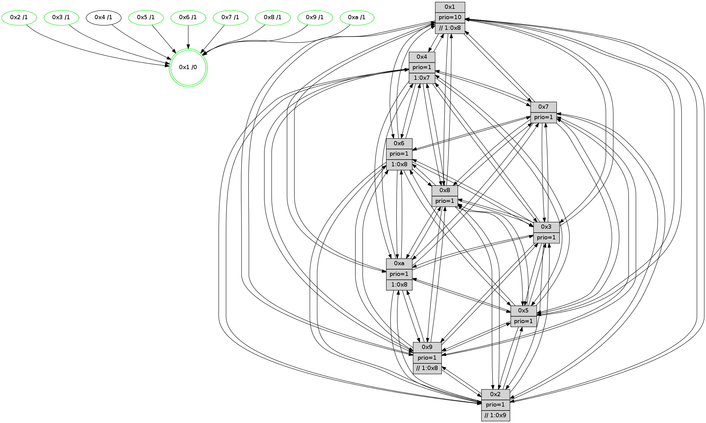

>> << IDX [start] -100 -25 -5 +0 +5 +25 +100 [920.177438974]
 Previous packets
----------------------------------------------------------------------
915.448647 beacon01(faad) #0 coord=01,02,03,04,05,06,07,0a,09,08 cycle=688.0ms assoc
-- color-indic=1 64 cc 0b
915.458629 beacon02(faad) #0 coord=01,02,03,04,05,06,07,0a,09,08 cycle=688.0ms assoc 64 5f 3a
915.468629 beacon03(faad) #0 coord=01,02,03,04,05,06,07,0a,09,08 cycle=688.0ms assoc 64 25 77
915.478630 beacon04(faad) #0 coord=01,02,03,04,05,06,07,0a,09,08 cycle=688.0ms assoc 64 52 9d
915.488632 beacon05(faad) #0 coord=01,02,03,04,05,06,07,0a,09,08 cycle=688.0ms assoc 64 28 d0
915.498629 beacon06(faad) #0 coord=01,02,03,04,05,06,07,0a,09,08 cycle=688.0ms assoc 64 a6 07
915.508632 beacon07(faad) #0 coord=01,02,03,04,05,06,07,0a,09,08 cycle=688.0ms assoc 64 dc 4a
915.518635 beacon0a(faad) #0 coord=01,02,03,04,05,06,07,0a,09,08 cycle=688.0ms assoc 64 ad 41
915.528635 beacon09(faad) #0 coord=01,02,03,04,05,06,07,0a,09,08 cycle=688.0ms assoc 64 23 96
915.538635 beacon08(faad) #0 coord=01,02,03,04,05,06,07,0a,09,08 cycle=688.0ms assoc 64 59 db
915.551716 [Hello(4): seq=585 sym=5,7,6,2,3,9,8,10,1 sysInfo= stat=5:14,14,9,10/7:7,8,12,6/6:12,2,7,9/2:15,12,3,8/3:6,12,5,7/9:5,2,14,6/8:3,1,1,1/10:9,8,0,8/1:8,6,9,1]
915.558085 [Color(3) seq=226 @0:0 prio=1 >1.@7]
915.560790 [STC(1) #0.117 tree-change,inconsistent-stability,stable,to-color d=0]
915.562853 [Color(9) seq=234 @0:0 prio=1 >>1.@7,1.@8,1.@9]
915.564435 [Hello(7): seq=585 sym=2,3,5,6,4,9,8,10,1 mpr= sysInfo=hasWarning stat=2:12,4,5,11/3:11,6,12,11/5:14,4,1,14/6:10,15,12,6/4:15,6,11,0/9:8,13,6,1/8:10,13,5,0/10:9,0,3,1/1:13,4,9,0]
915.567679 [Color(1) seq=266 @0:0 prio=10 >>1.@2,1.@3,1.@4]
915.571305 [Color(8) seq=230 @0:0 prio=1]
915.573457 [Color(7) seq=180 @0:0 prio=1]
915.577565 [Hello(10): seq=518 sym=6,2,3,8,9,5,7,4,1 sysInfo=hasWarning stat=6:0,10,10,4/2:6,4,8,3/3:15,12,3,7/8:7,2,2,0/9:10,11,11,2/5:3,6,13,11/7:2,4,8,5/4:13,6,0,6/1:0,10,12,1]
915.581006 [Color(10) seq=206 @0:0 prio=1 >1.@7,1.@8,1.@9]
----------------------------------------------------------------------
916.236777 beacon01(faad) #0 coord=01,02,03,04,05,06,07,0a,09,08 cycle=688.0ms assoc
-- color-indic=1 64 f8 13
916.246761 beacon02(faad) #0 coord=01,02,03,04,05,06,07,0a,09,08 cycle=688.0ms assoc 64 6b 22
916.256759 beacon03(faad) #0 coord=01,02,03,04,05,06,07,0a,09,08 cycle=688.0ms assoc 64 11 6f
916.266759 beacon04(faad) #0 coord=01,02,03,04,05,06,07,0a,09,08 cycle=688.0ms assoc 64 66 85
916.276761 beacon05(faad) #0 coord=01,02,03,04,05,06,07,0a,09,08 cycle=688.0ms assoc 64 1c c8
916.286759 beacon06(faad) #0 coord=01,02,03,04,05,06,07,0a,09,08 cycle=688.0ms assoc 64 92 1f
916.296761 beacon07(faad) #0 coord=01,02,03,04,05,06,07,0a,09,08 cycle=688.0ms assoc 64 e8 52
916.306766 beacon0a(faad) #0 coord=01,02,03,04,05,06,07,0a,09,08 cycle=688.0ms assoc 64 99 59
916.316765 beacon09(faad) #0 coord=01,02,03,04,05,06,07,0a,09,08 cycle=688.0ms assoc 64 17 8e
916.326766 beacon08(faad) #0 coord=01,02,03,04,05,06,07,0a,09,08 cycle=688.0ms assoc 64 6d c3
916.338001 [STC(4)->1 #0.117 to-color d=1]
916.339298 [Hello(1): seq=495 sym=4,2,9,5,10,3,8,6,7 sysInfo=coloring-mode-on,ColoringModeRequestCalled stat=4:12,1,12,0/2:13,12,9,10/9:1,10,11,4/5:7,9,1,4/10:2,11,7,1/3:3,8,5,2/8:6,4,5,0/6:14,11,5,10/7:14,10,10,11]
916.342557 [Hello(5): seq=586 sym=7,6,4,3,1,9,8,10,2 sysInfo=hasWarning stat=7:2,4,14,8/6:10,12,9,10/4:15,12,11,5/3:14,8,3,9/1:2,7,12,1/9:10,11,9,3/8:12,13,8,8/10:12,15,3,3/2:9,2,4,0]
916.345854 [Hello(2): seq=582 sym=4,5,7,6,3,9,8,10,1 sysInfo=hasWarning stat=4:8,12,1,4/5:2,4,3,0/7:6,4,14,9/6:8,0,8,8/3:12,1,4,5/9:9,7,7,3/8:12,1,5,8/10:10,2,7,8/1:14,5,10,1]
916.348610 [Hello(6): seq=586 sym=2,3,5,4,7,9,8,10,1 sysInfo= stat=2:14,10,3,7/3:8,14,11,9/5:8,8,12,12/4:14,4,2,0/7:12,3,9,5/9:10,8,11,3/8:9,5,7,1/10:13,14,1,9/1:2,9,7,1]
916.353330 [STC(6)->1 #0.117 tree-change,inconsistent-stability,stable,to-color d=1]
916.355705 [Hello(3): seq=586 sym=1,7,6,2,4,8,9,10,5 sysInfo= stat=1:9,6,0,0/7:13,11,4,7/6:6,6,7,2/2:3,11,9,9/4:2,9,12,5/8:3,2,5,1/9:9,8,8,9/10:11,8,4,1/5:10,4,3,10]
916.358887 [STC(5)->1 #0.117 tree-change,inconsistent-stability,stable,to-color d=1]
916.362100 [Color(6) seq=218 @0:0 prio=1 >1.@7,1.@8,1.@9,1.@a]
916.363858 [Color(5) seq=239 @0:0 prio=1]
916.369559 [STC(2)->1 #0.117 tree-change,inconsistent-stability,stable,to-color d=1]
916.371854 [TreeStatus(2)-.->1 #0.117 tree-change,inconsistent-stability,stable child=1]
916.373995 [Color(2) seq=231 @0:0 prio=1 >>1.@8,1.@9]
916.381635 [STC(3)->1 #0.117 tree-change,inconsistent-stability,stable,to-color d=1]
----------------------------------------------------------------------
917.024909 beacon01(faad) #0 coord=01,02,03,04,05,06,07,0a,09,08 cycle=688.0ms assoc
-- color-indic=1 64 44 16
917.034892 beacon02(faad) #0 coord=01,02,03,04,05,06,07,0a,09,08 cycle=688.0ms assoc 64 d7 27
917.044893 beacon03(faad) #0 coord=01,02,03,04,05,06,07,0a,09,08 cycle=688.0ms assoc 64 ad 6a
917.054891 beacon04(faad) #0 coord=01,02,03,04,05,06,07,0a,09,08 cycle=688.0ms assoc 64 da 80
917.064893 beacon05(faad) #0 coord=01,02,03,04,05,06,07,0a,09,08 cycle=688.0ms assoc 64 a0 cd
917.074893 beacon06(faad) #0 coord=01,02,03,04,05,06,07,0a,09,08 cycle=688.0ms assoc 64 2e 1a
917.084892 beacon07(faad) #0 coord=01,02,03,04,05,06,07,0a,09,08 cycle=688.0ms assoc 64 54 57
917.094898 beacon0a(faad) #0 coord=01,02,03,04,05,06,07,0a,09,08 cycle=688.0ms assoc 64 25 5c
917.104898 beacon09(faad) #0 coord=01,02,03,04,05,06,07,0a,09,08 cycle=688.0ms assoc 64 ab 8b
917.114899 beacon08(faad) #0 coord=01,02,03,04,05,06,07,0a,09,08 cycle=688.0ms assoc 64 d1 c6
917.128548 [Hello(4): seq=586 sym=5,7,6,2,3,9,8,10,1 sysInfo= stat=5:15,15,10,10/7:8,9,12,6/6:13,3,8,9/2:0,13,4,9/3:7,13,6,7/9:6,3,14,6/8:3,2,1,1/10:10,9,0,8/1:9,7,10,1]
917.131580 [Hello(10): seq=519 sym=6,2,3,8,9,5,7,4,1 sysInfo=hasWarning stat=6:1,11,11,4/2:7,5,9,4/3:0,12,4,7/8:7,2,2,0/9:10,11,11,2/5:4,7,14,11/7:2,4,8,5/4:14,6,1,6/1:1,10,12,1]
917.134420 [Hello(7): seq=586 sym=2,3,5,6,4,9,8,10,1 sysInfo=hasWarning stat=2:13,5,6,12/3:12,6,13,11/5:15,5,2,14/6:11,0,13,6/4:0,6,12,0/9:8,13,6,1/8:10,13,5,0/10:10,1,3,1/1:14,4,9,0]
917.139995 [Color(10) seq=207 @0:0 prio=1 >1.@7,1.@8,1.@9]
917.141843 [Color(7) seq=181 @0:0 prio=1]
917.143691 [Color(3) seq=227 @0:0 prio=1 >1.@7]
917.146380 [Color(1) seq=267 @0:0 prio=10 >>1.@8,1.@9,1.@a]
917.148055 [Color(9) seq=235 @0:0 prio=1 >>1.@8,1.@9,1.@a]
917.151751 [Color(8) seq=231 @0:0 prio=1]
----------------------------------------------------------------------
917.813044 beacon01(faad) #0 coord=01,02,03,04,05,06,07,0a,09,08 cycle=688.0ms assoc
-- color-indic=1 64 80 18
917.823026 beacon02(faad) #0 coord=01,02,03,04,05,06,07,0a,09,08 cycle=688.0ms assoc 64 13 29
917.833025 beacon03(faad) #0 coord=01,02,03,04,05,06,07,0a,09,08 cycle=688.0ms assoc 64 69 64
917.843026 beacon04(faad) #0 coord=01,02,03,04,05,06,07,0a,09,08 cycle=688.0ms assoc 64 1e 8e
917.853027 beacon05(faad) #0 coord=01,02,03,04,05,06,07,0a,09,08 cycle=688.0ms assoc 64 64 c3
917.863030 beacon06(faad) #0 coord=01,02,03,04,05,06,07,0a,09,08 cycle=688.0ms assoc 64 ea 14
917.873028 beacon07(faad) #0 coord=01,02,03,04,05,06,07,0a,09,08 cycle=688.0ms assoc 64 90 59
917.883033 beacon0a(faad) #0 coord=01,02,03,04,05,06,07,0a,09,08 cycle=688.0ms assoc 64 e1 52
917.893031 beacon09(faad) #0 coord=01,02,03,04,05,06,07,0a,09,08 cycle=688.0ms assoc 64 6f 85
917.903033 beacon08(faad) #0 coord=01,02,03,04,05,06,07,0a,09,08 cycle=688.0ms assoc 64 15 c8
917.914888 [Hello(3): seq=587 sym=1,7,6,2,4,8,9,10,5 sysInfo= stat=1:9,7,0,0/7:13,11,4,7/6:6,6,7,2/2:3,11,9,9/4:3,9,12,5/8:3,3,5,1/9:9,9,8,9/10:11,8,4,1/5:10,4,3,10]
917.919122 [Hello(6): seq=587 sym=2,3,5,4,7,9,8,10,1 sysInfo= stat=2:14,11,4,8/3:8,14,12,9/5:8,9,12,12/4:15,4,3,0/7:13,4,9,5/9:10,9,11,3/8:10,6,7,1/10:14,15,1,9/1:3,10,7,1]
917.923203 [Color(6) seq=219 @0:0 prio=1 >1.@8,1.@9,1.@a]
917.928643 [Hello(1): seq=496 sym=4,2,9,5,10,3,8,6,7 sysInfo=coloring-mode-on,ColoringModeRequestCalled stat=4:13,1,12,0/2:14,13,10,11/9:1,11,11,4/5:8,10,2,4/10:2,11,7,1/3:4,8,6,2/8:6,5,5,0/6:15,12,6,10/7:14,10,10,11]
917.935826 [Hello(5): seq=587 sym=7,6,4,3,1,9,8,10,2 sysInfo=hasWarning stat=7:3,5,14,8/6:10,12,9,10/4:0,12,12,6/3:14,8,4,9/1:3,8,12,1/9:10,12,9,3/8:13,14,8,8/10:13,0,3,3/2:9,3,5,1]
917.938863 [Hello(2): seq=583 sym=4,5,7,6,3,9,8,10,1 sysInfo=hasWarning stat=4:9,12,2,5/5:2,4,3,0/7:7,5,14,9/6:8,0,8,8/3:12,2,5,5/9:9,8,7,3/8:12,2,5,8/10:11,3,7,8/1:15,6,10,1]
917.942008 [Color(2) seq=232 @0:0 prio=1 >>1.@8,1.@9]
917.944679 [Color(5) seq=240 @0:0 prio=1]
----------------------------------------------------------------------
918.601176 beacon01(faad) #0 coord=01,02,03,04,05,06,07,0a,09,08 cycle=688.0ms assoc
-- color-indic=1 64 3c 1d
918.611159 beacon02(faad) #0 coord=01,02,03,04,05,06,07,0a,09,08 cycle=688.0ms assoc 64 af 2c
918.621158 beacon03(faad) #0 coord=01,02,03,04,05,06,07,0a,09,08 cycle=688.0ms assoc 64 d5 61
918.631159 beacon04(faad) #0 coord=01,02,03,04,05,06,07,0a,09,08 cycle=688.0ms assoc 64 a2 8b
918.641159 beacon05(faad) #0 coord=01,02,03,04,05,06,07,0a,09,08 cycle=688.0ms assoc 64 d8 c6
918.651159 beacon06(faad) #0 coord=01,02,03,04,05,06,07,0a,09,08 cycle=688.0ms assoc 64 56 11
918.661160 beacon07(faad) #0 coord=01,02,03,04,05,06,07,0a,09,08 cycle=688.0ms assoc 64 2c 5c
918.671165 beacon0a(faad) #0 coord=01,02,03,04,05,06,07,0a,09,08 cycle=688.0ms assoc 64 5d 57
918.681164 beacon09(faad) #0 coord=01,02,03,04,05,06,07,0a,09,08 cycle=688.0ms assoc 64 d3 80
918.691164 beacon08(faad) #0 coord=01,02,03,04,05,06,07,0a,09,08 cycle=688.0ms assoc 64 a9 cd
918.703937 [Hello(4): seq=587 sym=5,7,6,2,3,9,8,10,1 sysInfo= stat=5:0,0,10,10/7:8,10,12,6/6:14,4,8,9/2:1,14,4,9/3:8,13,6,7/9:6,4,14,6/8:4,3,1,1/10:10,10,0,8/1:10,8,10,1]
918.706656 [Color(3) seq=228 @0:0 prio=1]
918.709349 [Hello(8): seq=531 sym=5,2,3,4,9,6,7,10,1 sysInfo=hasWarning stat=5:2,11,15,11/2:1,6,10,4/3:4,11,9,11/4:6,2,8,6/9:10,12,5,0/6:5,10,6,10/7:7,4,0,1/10:10,12,2,0/1:7,0,8,0]
918.711911 [Hello(7): seq=587 sym=2,3,5,6,4,9,8,10,1 sysInfo=hasWarning stat=2:14,6,6,12/3:13,7,13,11/5:0,6,2,14/6:12,1,13,6/4:1,6,12,0/9:8,14,6,1/8:10,14,5,0/10:10,1,3,1/1:15,5,9,0]
918.714384 [Color(8) seq=232 @0:0 prio=1]
918.716959 [Color(7) seq=182 @0:0 prio=1]
918.718996 [Color(9) seq=236 @0:0 prio=1 >>1.@8,1.@9,1.@a]
918.722101 [Color(1) seq=268 @0:0 prio=10 >>1.@8,1.@9,1.@a]
918.726387 [Hello(10): seq=520 sym=6,2,3,8,9,5,7,4,1 sysInfo=hasWarning stat=6:2,12,11,4/2:8,6,9,4/3:1,13,4,7/8:7,3,2,0/9:10,12,11,2/5:5,8,14,11/7:2,5,8,5/4:15,6,1,6/1:2,11,12,1]
918.731108 [Color(10) seq=208 @0:0 prio=1 >1.@8,1.@9]
----------------------------------------------------------------------
919.389308 beacon01(faad) #0 coord=01,02,03,04,05,06,07,0a,09,08 cycle=688.0ms assoc
-- color-indic=1 64 9b 6d
919.399290 beacon02(faad) #0 coord=01,02,03,04,05,06,07,0a,09,08 cycle=688.0ms assoc 64 08 5c
919.409291 beacon03(faad) #0 coord=01,02,03,04,05,06,07,0a,09,08 cycle=688.0ms assoc 64 72 11
919.419291 beacon04(faad) #0 coord=01,02,03,04,05,06,07,0a,09,08 cycle=688.0ms assoc 64 05 fb
919.429291 beacon05(faad) #0 coord=01,02,03,04,05,06,07,0a,09,08 cycle=688.0ms assoc 64 7f b6
919.439291 beacon06(faad) #0 coord=01,02,03,04,05,06,07,0a,09,08 cycle=688.0ms assoc 64 f1 61
919.449291 beacon07(faad) #0 coord=01,02,03,04,05,06,07,0a,09,08 cycle=688.0ms assoc 64 8b 2c
919.459295 beacon0a(faad) #0 coord=01,02,03,04,05,06,07,0a,09,08 cycle=688.0ms assoc 64 fa 27
919.469296 beacon09(faad) #0 coord=01,02,03,04,05,06,07,0a,09,08 cycle=688.0ms assoc 64 74 f0
919.479296 beacon08(faad) #0 coord=01,02,03,04,05,06,07,0a,09,08 cycle=688.0ms assoc 64 0e bd
919.490803 [Hello(1): seq=497 sym=4,2,9,5,10,3,8,6,7 sysInfo=coloring-mode-on,ColoringModeRequestCalled stat=4:14,1,12,0/2:15,14,10,11/9:1,11,11,4/5:9,11,2,4/10:3,12,7,1/3:4,8,6,2/8:6,5,5,0/6:15,12,6,10/7:14,10,10,11]
919.494780 [Hello(6): seq=588 sym=2,3,5,4,7,9,8,10,1 sysInfo= stat=2:15,12,4,8/3:9,15,12,9/5:9,10,12,12/4:0,4,3,0/7:14,5,9,5/9:10,10,11,3/8:11,7,7,1/10:15,0,1,9/1:4,11,7,1]
919.499208 [Color(6) seq=220 @0:0 prio=1 >1.@8,1.@9,1.@a]
919.505642 [Hello(3): seq=588 sym=1,7,6,2,4,8,9,10,5 sysInfo= stat=1:10,8,0,0/7:14,12,4,7/6:7,7,7,2/2:4,12,9,9/4:4,9,12,5/8:4,4,5,1/9:9,10,8,9/10:12,9,4,1/5:11,5,3,10]
919.509703 [Hello(2): seq=584 sym=4,5,7,6,3,9,8,10,1 sysInfo=hasWarning stat=4:10,12,2,5/5:2,5,3,0/7:8,6,14,9/6:8,0,8,8/3:13,2,5,5/9:9,9,7,3/8:13,3,5,8/10:12,4,7,8/1:15,7,10,1]
919.512516 [Color(2) seq=233 @0:0 prio=1 >>1.@9]
919.513868 [STC(1) #0.118 tree-change,inconsistent-stability,stable,to-color d=0]
919.516386 [Hello(5): seq=588 sym=7,6,4,3,1,9,8,10,2 sysInfo=hasWarning stat=7:4,6,14,8/6:10,12,9,10/4:1,12,12,6/3:15,8,4,9/1:3,9,12,1/9:11,13,9,3/8:14,15,8,8/10:14,1,3,3/2:9,3,5,1]
919.519539 [Color(5) seq=241 @0:0 prio=1]